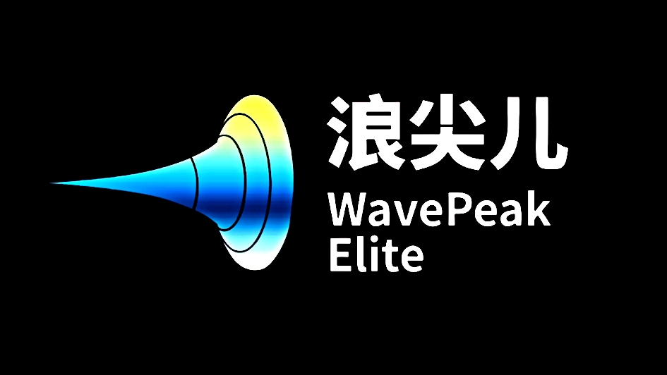

◆
钢铁洪流OPERATION CRESTING WAVE / 01
片头接入中

CRESTING WAVE / ARMORED COMPANY
浪尖
行动
于炮火巨浪之巅，踏平一切阻碍。
COMMAND DECK选择行动协议与部署区域
第 1 关 · 新兵的洗礼浪尖小队刚刚成立，突破自由同盟的试探性伏击。
WASD / 方向键移动 · 空格开火 · P 暂停
FIELD DEPOT / ARMORY
战地商店
用战斗积分改装浪尖小队的轻量化坦克。
可用积分 000000
MISSION FAILED
基地失守
再接再厉，指挥官。
TACTICAL SYSTEM / PAUSED
战斗暂停
战场计时与所有单位已停止。